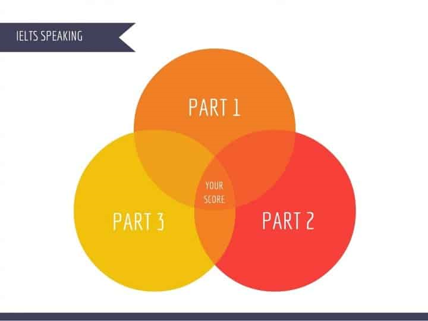

The Speaking test is a face-to-face conversation with a certified examiner. It is as close to a real-life situation as a test can get.
The examiner will ask you about familiar topics such as home, work or studies in part 1. This should help you feel comfortable when speaking. Try and relax so that you can speak as naturally as possible.
Take time before the test to practise speaking with a partner, friend or teacher.

Make the most of your Speaking test:
✢try to talk as much as you can
✢talk as fluently as possible and be spontaneous
✢relax, be confident and enjoy using your English
✢develop your answers
✢speak more than the examiner
✢ask for clarification if necessary
✢do not learn prepared answers; the examiner is trained to spot this and will change the question
✢express your opinions; you will be assessed on your ability to communicate
✢the examiner’s questions tend to be fairly predictable; practise at home and record yourself